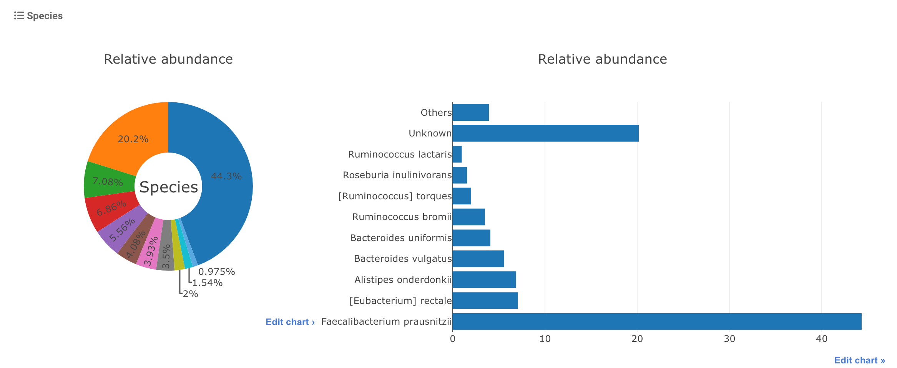

Projects and runs¶
The projects and runs webpages can be found from the
Data menu, the latter contains two submenus, one for all projects and runs , the other is for curated projects .
There are four types of webpages for projects and runs.
All projects and runs ¶
This page provides statistics on the data collected in GMrepo, and lists all projects and runs in two tables, from the tables users can access webpages for details of a specific project or run.
It thus consists three parts:
1. Overview¶
This parts provides overview of data collected in our database. For example, the current release contains:
- Meta data for in total 71,642 runs (samples), belonging to 353 projects. Among which, raw data have been processed for in total 53,700 runs (samples), belonging to 282 projects.
- Among which, microbe abundance data are available for in total 37,550 runs (samples), belonging to 209 projects.
- In total 16,150 runs (samples), belonging to 159 projects failed our QC processes.
- In addition, GMrepo also includes information on 76 projects whose raw data were not processed, including in total 31,381 runs/samples, due to various reasons, mostly the lack of a clearly defined health/disease information.
2. All projects table¶
This table contains a list of collected projects, their associated diseases, related publications, brief descriptions and whether the rawdata have been processed.
The rawdata of a project will not be processed if it lacks certain essential meta-data. For example, GMrepo currently contains 76 projects whose raw data were not processed, correspondin to in total 31,381 runs/samples, due to various reasons, mostly because of the lack of phenotype information; uses can click the project id for details.
For example, project PRJNA682076 contains 666 samples/runs; it was not processed because host-related information were not available, including the disease/heath information, age, gender and BMI.
3. All runs table¶
This table contains a list of collected samples in GMrepo. Also available are meta-data including:
-
technical meta-data such as:
-
experiment type (16S or Metagenomics),
- sequencing devices / instruments, and
-
number of obtained sequencing reads.
-
Host-related, biological-relevant meta-data such as:
-
disease or health of the host (refered as to
phenotypein our database), - age,
- sex,
- BMI (body mass index), and
- antibiotic usage.
Meta data are available for in total 71,642 runs/samples.
A QCStatus (quanlity-control result) is available for each run, which can be one of the three values:
- 1: the data passed our QC procedure and the processed results (i.e., taxnomic assignments) have been loaded into our database,
- 0: the data did NOT pass our QC,
- (empty): data yet to be proccessed and loaded to our database.
Please consult Data processing & QC for more details.
project details page¶
The project details page is available for each collected project in GMrepo, and provides details on a project, including:
- included samples,
- associated disease(s),
- related publication(s), and
- disease marker analysis results
Here are some random examples:
1. Project overview¶
This part provides some basic information regarding a project, including:
- a brief project description obtained from public databases, mostly from ENA (European Nucleotide Archive) or NCBI SRA (Sequence Read Archive) database ,
- number of included runs,
- related publication(s), if available,
- whether the project is a curated project .
2. Included runs/samples¶
This part includes a table that contains a list of runs/samples included in the project. Similar to the All runs table, related technical and biological meta-data and QCStatus are also listed in the table. Please consult the All runs table section above for more details.
3. In-depth analysis¶
In-depth analysis so far includes only marker identification. Please consult our documentation on Disease marker identification for more details.
Briefly, microbial markers that show significantly differential abundances between:
- either a disease and the healthy control group, e.g., CRC and health,
- or two distinct stages of a disease, e.g., adenoma and CRC
are identified using LEfSe (Linear discriminant analysis effect size)
PMID: 21702898 .
In GMrepo, markers are identified on per-project basis, thus the analysis results are included in this project details for each project.
In addition to be shown in a data table, the LEfSe results are also visualized in a barplot, as shown below:

this plot shows marker species that show |LDA score| >= 2.0 between CRC and healthy controls in project PRJDB4176 , in which green (pink) bars indicate health(CRC)-enriched species.
Note
- for whole-genome shortgun sequencing (a.k.a mNGS) projects, markers were identified at both
speciesandgenuslevels; - for 16S amplicon data (a.k.a 16S) projects, markers were identified at only
genus. - users can choose to show either
speciesorgenuslevel markers, or both, by using thecontrol buttonsabove the barplot.
Run details page¶
This page shows details of a specific run, and includes two parts.
1. Run details and meta-data¶
This part includes:
- run ID,
- a brief introduction,
- related project ID and sample ID,
- associated disease, and
- meta-data
2. Taxonomic profile¶
This part shows the taxonomic profile, i.e., the bacterial species/genus identified in the run and their relative abundances.
See ERR481097 for an example.
The relative abundances are visualized as below:

Users can download the detailed profile as a text file using the link below the figures.